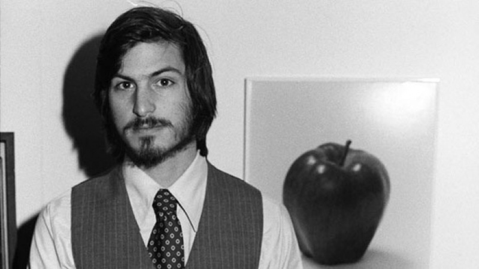
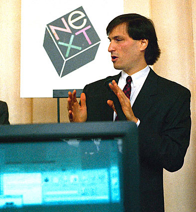

<TechiePediaTM/>
Thinkers// Believers // Pioneers

"Being the richest man in the cemetery doesn't matter to me. Going to bed at night saying we've done something wonderful, that's what matters to me."
|
||||||||||||||||
|
Contents :
Steven Paul "Steve" Jobs (/ˈdʒɒbz/; February 24, 1955 – October 5, 2011) was an American businessman, inventor, and industrial designer. He was the co-founder, chairman, and chief executive officer (CEO) of Apple Inc.; CEO and majority shareholder of Pixar; a member of The Walt Disney Company's board of directors following its acquisition of Pixar; and founder, chairman, and CEO of NeXT. Jobs is widely recognized as a pioneer of the microcomputer revolution of the 1970s and 1980s, along with Apple co-founder Steve Wozniak. Shortly after his death, Jobs's official biographer, Walter Isaacson, described him as a "creative entrepreneur whose passion for perfection and ferocious drive revolutionized six industries: personal computers, animated movies, music, phones, tablet computing, and digital publishing." Jobs's countercultural lifestyle and philosophy was a product of the time and place of his upbringing. Jobs was adopted at birth in San Francisco, and raised in a hotbed of counterculture, the San Francisco Bay Area during the 1960s. As a senior at Homestead High School in Cupertino, California, his two closest friends were the older engineering student (and Homestead High alumnus) Wozniak and his girlfriend, the artistically inclined and countercultural Homestead High junior Chrisann Brennan. Jobs and Wozniak bonded over their mutual fascination with Jobs's musical idol Bob Dylan, discussing his lyrics and collecting bootleg reel-to-reel tapes of Dylan's concerts. Jobs later dated Joan Baez who notably had a prior relationship with Dylan. Jobs briefly attended Reed College in 1972 before dropping out. He then decided to travel through India in 1974 seeking enlightenment and studying Zen Buddhism. Jobs's declassified FBI report says an acquaintance knew that Jobs used illegal drugs in college including marijuana and LSD. Jobs told a reporter once that taking LSD was "one of the two or three most important things" he did in his life. Jobs co-founded Apple in 1976 to sell Wozniak's Apple I personal computer. The duo gained fame and wealth a year later for the Apple II, one of the first highly successful mass-produced personal computers. In 1979, after a tour of PARC, Jobs saw the commercial potential of the Xerox Alto, which was mouse-driven and had a graphical user interface (GUI). This led to development of the unsuccessful Apple Lisa in 1983, followed by the breakthrough Macintosh in 1984. In addition to being the first mass-produced computer with a GUI, the Macintosh instigated the sudden rise of the desktop publishing industry in 1985 with the addition of the Apple LaserWriter, the first laser printer to feature vector graphics. Following a long power struggle, Jobs was forced out of Apple in 1985. After leaving Apple, Jobs took a few of its members with him to found NeXT, a computer platform development company specializing in state-of-the-art computers for higher-education and business markets. In addition, Jobs helped to initiate the development of the visual effects industry when he funded the spinout of the computer graphics division of George Lucas's Lucasfilm in 1986. The new company, Pixar, would eventually produce the first fully computer-animated film, Toy Story—an event made possible in part because of Jobs's financial support. Jobs's design aesthetic was influenced by the modernist architectural style of Joseph Eichler, by the industrial designs of Braun's Dieter Rams, and by Buddhism. In India, he experienced Buddhism while on his seven-month spiritual journey, and his sense of intuition was influenced by the spiritual people with whom he studied. According to Apple cofounder Steve Wozniak "Steve didn't ever code. He wasn't an engineer and he didn't do any original design..." Daniel Kottke, one of Apple's earliest employees and a college friend of Jobs's, stated that "Between Woz and Jobs, Woz was the innovator, the inventor. Steve Jobs was the marketing person." He is listed as either primary inventor or co-inventor in 346 United States patents or patent applications related to a range of technologies from actual computer and portable devices to user interfaces (including touch-based), speakers, keyboards, power adapters, staircases, clasps, sleeves, lanyards and packages. Jobs's contributions to most o f his patents were to "the look and feel of the product." His industrial design chief Jonathan Ive had his name along with him for 200 of the patents. Most of these are design patents (specific product designs; for example, Jobs listed as primary inventor in patents for both original and lamp-style iMacs, as well as PowerBook G4 Titanium) as opposed to utility patents (inventions). He has 43 issued US patents on inventions. The patent on the Mac OS X Dock user interface with "magnification" feature was issued the day before he died. |
||||||||||||||||
|
Early Life :

A young Steve Jobs in the early days of apple. Schieble became pregnant in 1954 when she and Jandali spent the summer with his family in Homs, Syria. Jandali has stated that he "was very much in love with Joanne ... but sadly, her father was a tyrant, and forbade her to marry me, as I was from Syria. And so she told me she wanted to give the baby up for adoption." Jobs told his official biographer that Schieble's father was dying at the time, Schieble did not want to aggravate him, and both felt that at 23 they were too young to marry. In addition, as there was a strong stigma against bearing a child out of wedlock and raising it as a single mother, and as abortions were illegal and dangerous, adoption was the only option women had in the United States in 1954. According to Jandali, Schieble deliberately did not involve him in the process: "without telling me, Joanne upped and left to move to San Francisco to have the baby without anyone knowing, including me ... she did not want to bring shame onto the family and thought this was the best for everyone." Schieble put herself in the care of a "doctor who sheltered unwed mothers, delivered their babies, and quietly arranged closed adoptions." Schieble gave birth to Jobs on February 24, 1955, in San Francisco, and chose an adoptive couple for him that was "Catholic, well-educated, and wealthy." That couple, however, changed their mind and decided to adopt a girl instead. When the baby boy was then placed with the Bay Area blue collar couple Paul and Clara Jobs, neither of whom had a college education, Schieble refused to sign the adoption papers. She then took the matter to court, attempting to have her baby placed with a different family and only consented to releasing the baby to Paul and Clara after they promised that he would attend college. When Jobs was in high school, Clara admitted to his then-girlfriend, 17-year-old Chrisann Brennan, that she "was too frightened to love [Steve] for the first six months of his life ... I was scared they were going to take him away from me. Even after we won the case, Steve was so difficult a child that by the time he was two I felt we had made a mistake. I wanted to return him."" When Chrisann shared this comment with Jobs, he stated that he was aware of it and would later say that he was deeply loved and indulged by Paul and Clara. Many years later, Jobs's wife Laurene also noted that "he felt he had been really blessed by having the two of them as parents." Jobs would become upset when Paul and Clara were referred to as "adoptive parents" as they "were my parents 1,000%." With regard to his biological parents, Jobs referred to them as "my sperm and egg bank. That's not harsh, it's just the way it was, a sperm bank thing, nothing more." Jandali has also stated that "I really am not his dad. Mr. and Mrs. Jobs are, as they raised him. And I don't want to take their place." By early 1973, Jobs was living what Brennan describes as a "simple life" in a Los Gatos cabin, working at Atari, and saving money for his impending trip to India. Brennan visited him twice at the cabin. She states in her memoir that her memories of this cabin consist of Jobs reading Be Here Now (and giving her a copy), listening to South Indian music, and using a Japanese meditation pillow. Brennan felt that he was more distant and negative toward her. Brennan states in her memoir that she met with Jobs right before he left for India and that he tried to give her a $100 bill that he had earned at Atari. She initially refused to accept it but eventually accepted the money. Jobs traveled to India in mid-1974 to visit Neem Karoli Baba at his Kainchi ashram with his Reed friend (and eventual Apple employee) Daniel Kottke, in search of spiritual enlightenment. When they got to the Neem Karoli ashram, it was almost deserted because Neem Karoli Baba had died in September 1973. Then they made a long trek up a dry riverbed to an ashram of Haidakhan Babaji. In India, they spent a lot of time on bus rides from Delhi to Uttar Pradesh and Himachal Pradesh. After staying for seven months, Jobs left India and returned to the US ahead of Daniel Kottke. Jobs had changed his appearance; his head was shaved and he wore traditional Indian clothing. During this time, Jobs experimented with psychedelics, later calling his LSD experiences "one of the two or three most important things [he had] done in [his] life." He spent a period at the All One Farm, a commune in Oregon and Brennan joined him there for a period. During this time period, both Jobs and Brennan became practitioners of Zen Buddhism through the Zen master Kōbun Chino Otogawa. Jobs was living with his parents again, in their backyard toolshed which he had converted into a bedroom with a sleeping bag, mat, books, a candle, and a meditation pillow. Jobs engaged in lengthy meditation retreats at the Tassajara Zen Mountain Center, the oldest Sōtō Zen monastery in the US. He considered taking up monastic residence at Eihei-ji in Japan, and maintained a lifelong appreciation for Zen. Jobs would later say that people around him who did not share his countercultural roots could not fully relate to his thinking. Jobs then returned to Atari and was assigned to create a circuit board for the arcade video game Breakout. According to Bushnell, Atari offered US$100 for each TTL chip that was eliminated in the machine. Jobs had little specialized knowledge of circuit board design and made a deal with Wozniak to split the fee evenly between them if Wozniak could minimize the number of chips. Much to the amazement of Atari engineers, Wozniak reduced the TTL count to 46, a design so tight that it was impossible to reproduce on an assembly line. According to Wozniak, Jobs told him that Atari gave them only $700 (instead of the $5,000 paid out), and that Wozniak's share was thus $350. Wozniak did not learn about the actual bonus until ten years later, but said that if Jobs had told him about it and explained that he needed the money, Wozniak would have given it to him. |
||||||||||||||||
|
Wealth : Jobs was worth a million dollars when he was 23 (1978), 10 million when he was 24, and over 100 million when he was 25. He was also one of the youngest "people ever to make the Forbes list of the nation's richest people – and one of only a handful to have done it themselves, without inherited wealth." In 1978, Apple recruited Mike Scott from National Semiconductor to serve as CEO for what turned out to be several turbulent years. In 1983, Jobs lured John Sculley away from Pepsi-Cola to serve as Apple's CEO, asking, "Do you want to spend the rest of your life selling sugared water, or do you want a chance to change the world?". In 1982, Jobs bought an apartment in the two top floors of The San Remo, a Manhattan building with a politically progressive reputation. Although he never lived there, he spent years renovating it with the help of I. M. Pei. In 2003, he sold it to U2 singer Bono. In 1984, Jobs bought the Jackling House and estate, and resided there for a decade. After that, he leased it out for several years until 2000 when he stopped maintaining the house, allowing exposure to the weather to degrade it. In 2004, Jobs received permission from the town of Woodside to demolish the house in order to build a smaller contemporary styled one. After a few years in court, the house was finally demolished in 2011, a few months before he died. In early 1984, Apple introduced the Macintosh, which was based on The Lisa (and Xerox PARC's mouse-driv en graphical user interface). The following year, Apple aired a Super Bowl television commercial titled "1984." At Apple's annual shareholders meeting on January 24, 1984, an emotional Jobs introduced the Macintosh to a wildly enthusiastic audience; Andy Hertzfeld described the scene as "pandemonium." Despite the fanfare, the expensive Macintosh was a hard sell. Shortly after its release in 1985, Bill Gates's then-developing company, Microsoft, threatened to stop developing Mac applications unless it was granted "a license for the Mac operating system software. Microsoft was developing its graphical user interface ... for DOS, which it was calling Windows and didn't want Apple to sue over the similarities between the Windows GUI and the Mac interface." Sculley granted Microsoft the license which later led to problems for Apple. In addition, cheap IBM PC clones that ran on Microsoft software and had a graphical user interface began to appear. Although the Macintosh preceded the clones, it was far more expensive, so "through the late '80s, the Windows user interface was getting better and better and was thus taking increasingly more share from Apple." Windows based IBM-PC clones also led to the development of additional GUIs such as IBM's TopView or Digital Research's GEM, and thus "the graphical user interface was beginning to be taken for granted, undermining the most apparent advantage of the Mac...it seemed clear as the '80s wound down that Apple couldn't go it alone indefinitely against the whole IBM-clone market." |
||||||||||||||||
|
Resignation from apple and establishment of NeXT :

Jobs in 1985 addressing the board of directors of NeXT. In May 1985, Sculley (encouraged by Arthur Rock) decided to reorganize Apple, and proposed a plan to the board that would remove Jobs from the Macintosh group and put him in charge of "New Product Development." This move would effectively render Jobs powerless within Apple . In response, then Jobs developed a plan to get rid of Sculley and take over Apple. However, after the plan was leaked and Jobs confronted, he said that he would leave Apple. The Board declined his resignation and asked him to reconsider. Sculley also told Jobs that he had all of the votes needed to go ahead with the reorganization. A few months later, on September 17, 1985, Jobs turned in a letter of resignation to the Apple Board. Five additional senior Apple employees also resigned and joined Jobs in his new venture, NeXT. Jobs founded NeXT Inc. in 1985 after his resignation from Apple[72] with $7 million. A year later he was running out of money, and with no product on the horizon, he sought venture capital. Eventually, Jobs attracted the attention of billionaire Ross Perot who invested heavily in the company.[73] T he NeXT computer was shown to the world at what was considered Jobs's comeback event, a lavish (invitation only) gala launch event and was described as a multimedia extravaganza.[76] It was held at the Louise M. Davies Symphony Hall, San Francisco, California on Wednesday October 12, 1988. NeXT workstations were first released in 1990, priced at US$9,999. Like the Apple Lisa, the NeXT workstation was technologically advanced, but was largely dismissed as cost-prohibitive by the educational sector for which it was designed.[77] The NeXT workstation was known for its technical strengths, chief among them its object-oriented software development system. Jobs marketed NeXT products to the financial, scientific, and academic community, highlighting its innovative, experimental new technologies, such as the Mach kernel, the digital signal processor chip, and the built-in Ethernet port. Tim Berners-Lee invented the World Wide Web on a NeXT computer at CERN.[78] The revised, second generation NeXTcube was released in 1990. Jobs touted it as the first "interpersonal" computer that would replace the personal computer. With its innovative NeXTMail multimedia email system, NeXTcube could share voice, image, graphics, and video in email for the first time. "Interpersonal computing is going to revolutionize human communications and groupwork", Jobs told reporters. Jobs ran NeXT with an obsession for aesthetic perfection, as evidenced by the development of and attention to NeXTcube's magnesium case. This put considerable strain on NeXT's hardware division, and in 1993, after having sold only 50,000 machines, NeXT transitioned fully to software development with the release of NeXTSTEP/Intel. The company reported its first profit of $1.03 million in 1994. In 1996, NeXT Software, Inc. released WebObjects, a framework for Web application development. After NeXT was acquired by Apple Inc. in 1997, WebObjects was used to build and run the Apple Store, MobileMe services, and the iTunes Store. In 1996, Apple announced that it would buy NeXT for $427 million. The deal was finalized in February 1997, bringing Jobs back to the company he had cofounded. Jobs became de facto chief after then-CEO Gil Amelio was ousted in July 1997. He was formally named interim chief executive in September. In March 1998, to concentrate Apple's efforts on returning to profitability, Jobs terminated a number of projects, such as Newton, Cyberdog, and OpenDoc. In the coming months, many employees developed a fear of encountering Jobs while riding in the elevator, "afraid that they might not have a job when the doors opened. The reality was that Jobs's summary executions were rare, but a handful of victims was enough to terrorize a whole company." Jobs changed the licensing program for Macintosh clones, making it too costly for the manufacturers to continue making machines. With the purchase of NeXT, much of the company's technology found its way into Apple products, most notably NeXTSTEP, which evolved into Mac OS X. Under Jobs's guidance, the company increased sales significantly with the introduction of the iMac and other new products; since then, appealing designs and powerful branding have worked well for Apple. At the 2000 Macworld Expo, Jobs officially dropped the "interim" modifier from his title at Apple and became permanent CEO. Jobs quipped at the time that he would be using the title "iCEO." The company subsequently branched out, introducing and improving upon other digital appliances. With the introduction of the iPod portable music player, iTunes digital music software, and the iTunes Store, the company made forays into consumer electronics and music distribution. On June 29, 2007, Apple entered the cellular phone business with the introduction of the iPhone, a multi-touch display cell phone, which also included the features of an iPod and, with its own mobile browser, revolutionized the mobile browsing scene. While nurturing innovation, Jobs also reminded his employees that "real artists ship." Jobs had a public war of words with Dell Computer CEO Michael Dell, starting in 1987, when Jobs first criticized Dell for making "un-innovative beige boxes." On October 6, 1997, at a Gartner Symposium, when Dell was asked what he would do if he ran the then-troubled Apple Computer company, he said: "I'd shut it down and give the money back to the shareholders." Then, in 2006, Jobs sent an email to all employees when Apple's market capitalization rose above Dell's: Team, it turned out that Michael Dell wasn't perfect at predicting the future. Based on today's stock market close, Apple is worth more than Dell. Stocks go up and down, and things may be different tomorrow, but I thought it was worth a moment of reflection today. Steve. |
||||||||||||||||